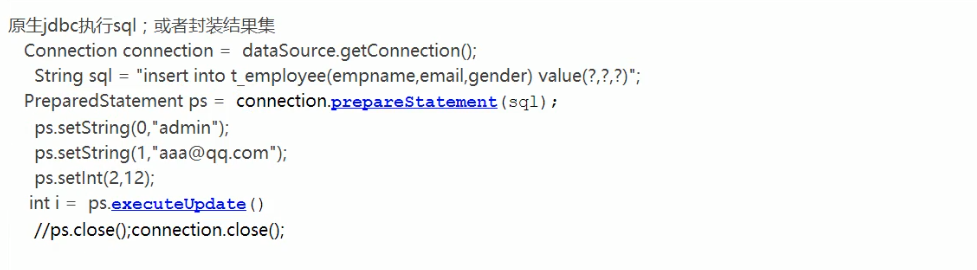

<?xml version="1.0" encoding="UTF-8" ?><!DOCTYPE configuration
PUBLIC "-//mybatis.org//DTD Config 3.0//EN"
"http://mybatis.org/dtd/mybatis-3-config.dtd"><configuration>
<environments default="development">
<environment id="development">
<transactionManager type="JDBC"/>
<dataSource type="POOLED">
<property name="driver" value="${driver}"/>
<property name="url" value="${url}"/>
<property name="username" value="${username}"/>
<property name="password" value="${password}"/>
</dataSource>
</environment>
</environments>
<mappers>
<mapper resource="org/mybatis/example/BlogMapper.xml"/>
</mappers></configuration>
全局配置文件：
configuration（配置）
- environment（环境变量）
- transactionManager（事务管理器）
- dataSource（数据源）
1、properties：引入外部配置文件。
- resource：导入类路径下的文件；
- url：引入磁盘路径或者网络路径。
2、settings： 这是 MyBatis 中极为重要的调整设置，它们会改变 MyBatis 的运行时行为。 下表描述了设置中各项设置的含义、默认值等。
3、typeAliases：起别名；
4、typeHandlers：

MyBatis 在设置预处理语句（PreparedStatement）中的参数或从结果集中取出一个值时， 都会用类型处理器将获取到的值以合适的方式转换成 Java 类型。下表描述了一些默认的类型处理器。
提示 从 3.4.5 开始，MyBatis 默认支持 JSR-310（日期和时间 API） 。
5、plugins插件：